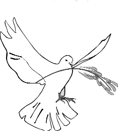

Les dernières cassettes-video de Maître Suprême Ching Hai

<En anglais avec sous-titrages en chinois>
L'importance de garder ses actions, pensées et paroles pures.
Le 12 mars 1996, L.A., Etats-Unis
Retraite européenne de 4 jours (5)
Cultiver de bonnes habitudes
Le 24 août 1997, Londres, Royaume-Uni
La véritable signification de l'Ahimsa
Le 22 novembre 1997, Bangkok, Thaïlande
Célébration du Jour Ching Hai
Le 25 octobre 1997, Bangkok, Thaïlande
Retraite internationale de 4 jours (1)
Vie spirituelle et éthique professionnelle
Du 24 au 27 décembre 1997, Washington DC, Etats-Unis
Retraite internationale de 4 jours (2)
Le but de l'illumination
Du 24 au 27 décembre 1997, Washington DC, Etats-Unis
Un voyage à travers les royaumes esthétiques (Parties I et II)
Concert en direct au DAR Constitution Hall de Washington DC
Le 27 décembre 1997, Washington DC, Etats-Unis
<En chinois avec sous-titrages en anglais>
Liye Tze - Voler au-dessus des nuages/La philosophie de vie de Yang Tze
Le 17 septembre 1995, Hsihu, Formose
<En anglais avec sous-titrages en coréen>
Les 112 méthodes de concentration de Shiva (I)
Le 24 décembre 1995, Hsihu, Formose
Retraite internationale de 4 jours pour le Jour Ching Hai 1996 (IV)
Plus nous sommes sincèrement dévoués à Dieu, moins nous avons de désirs.
Le 19 février 1996, Hsihu, Formose
<En anglais avec sous-titrages en espagnol>
Laisser Dieu servir à travers nous
Le 20 avril 1993, Nations Unis, Genève
<En anglais avec sous-titrages en hongrois>
Le moyen d'atteindre le Royaume de Dieu est l'illumination
Le 24 février 1991, Université d'Harvard, Etats-Unis
L'illumination est la clé de tout
Le 10 avril 1993, Colorado, Etats-Unis